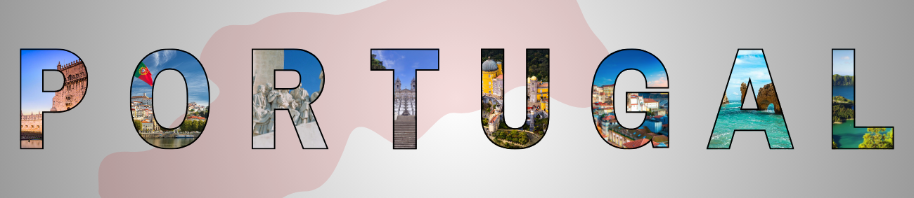

Portugal: Um Legado de Descobrimentos e Cultura.
A história de Portugal é marcada por conquistas, descobertas e uma identidade cultural única que se moldou ao longo dos séculos. Localizado na extremidade sudoeste da Europa, Portugal tem suas raízes na presença de povos antigos como os lusitanos, romanos e visigodos, antes de se tornar um reino independente no século XII.
A Fundação de um Reino
Em 1143, com o Tratado de Zamora, Portugal foi oficialmente reconhecido como um reino independente sob o reinado de Dom Afonso Henriques, o primeiro rei de Portugal. Poucos séculos depois, o país completaria a sua Reconquista, consolidando fronteiras praticamente inalteradas até os dias de hoje — um feito raro na Europa.
A Era dos Descobrimentos
Entre os séculos XV e XVI, Portugal protagonizou um dos períodos mais fascinantes da história mundial: a Era dos Descobrimentos. Navegadores como Vasco da Gama, Bartolomeu Dias e Pedro Álvares Cabral abriram novos caminhos marítimos, ligando a Europa à África, Ásia e América. Lisboa tornou-se um centro de comércio global, e o Império Português estendeu-se por quatro continentes.
Crises, Restauração e Modernidade
O domínio filipino (1580-1640), a Restauração da Independência, o terramoto de 1755 e as lutas liberais do século XIX são capítulos de uma história rica em desafios. No século XX, Portugal viveu a longa ditadura do Estado Novo, que terminou com a Revolução dos Cravos, em 25 de abril de 1974 — um marco de liberdade e democracia.
Portugal Hoje
Hoje, Portugal é uma república democrática, membro da União Europeia, reconhecido mundialmente pela sua herança cultural, paisagens deslumbrantes, gastronomia e hospitalidade. Sua história continua viva nas ruas de cidades como Lisboa, Porto, Évora e Coimbra, e nas tradições que seguem encantando quem visita ou vive no país.